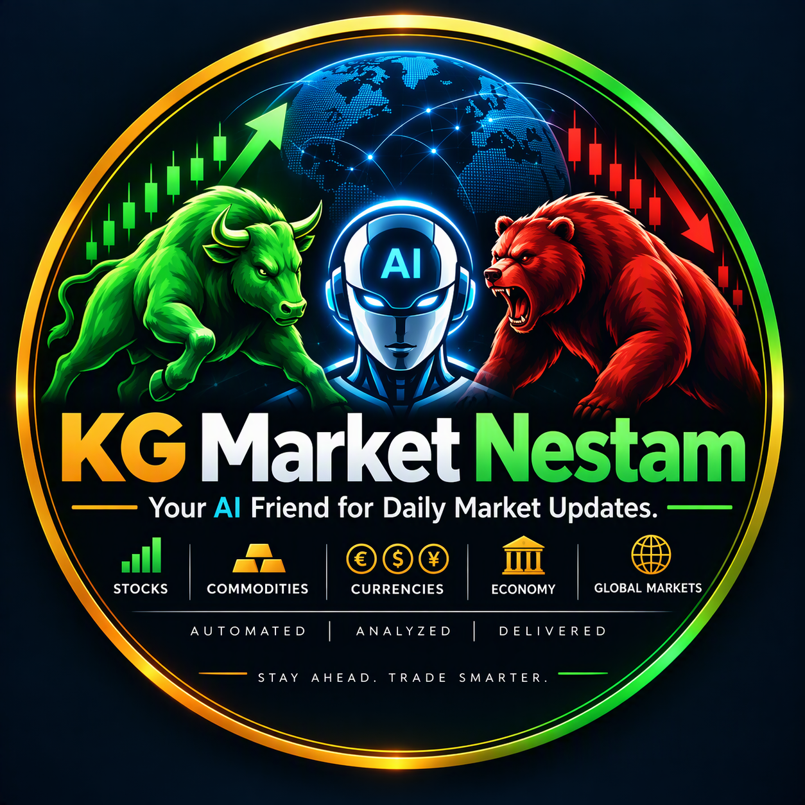

KG Market Nestam
Your AI friend for daily market updates
Your AI friend for daily market updates
Privacy Policy: KG Market Nestam uploader
Last updated: 9 November 2026 · Terms of Service
KG Market Nestam uploader ("the app") is a private tool used only by the owner of the YouTube channel KG Market Nestam to upload the channel's own daily market-news videos. It is not offered to the public and has no other users.
What the app accesses
- With the channel owner's permission (Google sign-in), the app uses the YouTube Data API v3
scope
https://www.googleapis.com/auth/youtube.uploadto upload videos and set their thumbnails on the owner's own channel. - The app does not read, collect or store viewers' data, comments, subscribers, analytics, or any other YouTube or Google user data.
How data is stored
- The Google sign-in token is stored only on the channel owner's own computer or in the owner's private automation secrets, and is used only to upload the channel's videos.
- Nothing is sold, shared with third parties, or used for advertising.
Data retention and deletion
- The only stored item is the Google sign-in token. It is kept only while the channel owner uses the app to upload videos.
- Revoking access (see below) makes the token useless immediately; the owner then deletes the token file from his computer and from his private automation secrets.
- No YouTube or Google user data is collected, so there is no other data to delete. Videos and their details live on YouTube and are managed by the owner in YouTube Studio.
- Questions or deletion requests: kgmarketnestam@gmail.com, answered within 7 days.
Google API Services
The app's use of information received from Google APIs adheres to the Google API Services User Data Policy, including the Limited Use requirements. Use of YouTube is subject to the YouTube Terms of Service and the Google Privacy Policy.
Revoking access
The channel owner can revoke the app's access at any time at myaccount.google.com/permissions.